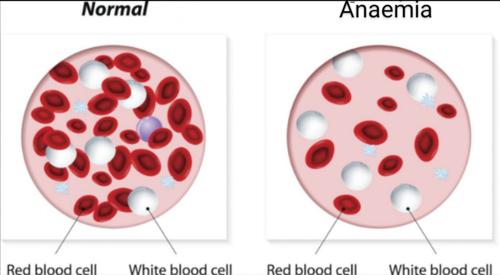

Anaemia
A condition in which the blood doesn't have enough healthy red blood cells.
Anaemia results from a lack of red blood cells or dysfunctional red blood cells in the body. This leads to reduced oxygen flow to the body's organs.
Anemia is a condition in which you lack enough healthy red blood cells to carry adequate oxygen to your body's tissues. Having anemia, also referred to as low hemoglobin, can make you feel tired and weak.
Normal hemoglobin counts are 14 to 17 gm/dL (grams per deciliter) for men and 12 to 15 gm/dL for women.
There are many forms of anemia, each with its own cause. Anemia can be temporary or long term and can range from mild to severe. In most cases, anemia has more than one cause. See your doctor if you suspect that you have anemia. It can be a warning sign of serious illness.
Causes of Anaemia
Anaemia is a condition in which the number of red blood cells or the haemoglobin concentration within them is lower than normal. Haemoglobin is needed to carry oxygen and if you have too few or abnormal red blood cells, or not enough haemoglobin, there will be a decreased capacity of the blood to carry oxygen to the body’s tissues. This results in symptoms such as fatigue, weakness, dizziness and shortness of breath, among others. The optimal haemoglobin concentration needed to meet physiologic needs varies by age, sex, elevation of residence, smoking habits and pregnancy status. The most common causes of anaemia include nutritional deficiencies, particularly iron deficiency, though deficiencies in folate, vitamins B12 and A are also important causes; haemoglobinopathies; and infectious diseases, such as malaria, tuberculosis, HIV and parasitic infections.
Anaemia is a serious global public health problem that particularly affects young children and pregnant women. WHO estimates that 42% of children less than 5 years of age and 40% of pregnant women worldwide are anaemic.
Symptoms of Anaemia
Whole body: dizziness, fatigue, light-headedness, or malaise
Heart: fast heart rate or palpitations
Also common: brittle nails, headache, pallor, shortness of breath, or weakness

Solutions for treatment of anaemia :-
Diet plays an important role Common types of anemia can be prevented and treated by eating iron-rich foods. The best sources are red meat (especially beef and liver), poultry, fish, and shellfish.
- To prevent iron deficiency anemia in infants, feed your baby breast milk or iron-fortified formula for the first year. Cow's milk isn't a good source of iron for babies and isn't recommended for infants under 1 year. After age 6 months, start feeding your baby iron-fortified cereals or pureed meats at least twice a day to boost iron intake. After one year, be sure children don't drink more than 20 ounces (591 milliliters) of milk a day. Too much milk often takes the place of other foods, including those that are rich in iron.
Strategies to prevent iron Deficiencies are:-
Dietary diversification
Dietary diversification is encouraging the consumption of micronutrient rich foods-dark green leafy vegetables, lentils and vitamin C rich fruits - which may be available but are under utilised by the deficient population.
Food fortification
Food fortification refers to the addition of micronutrients to processed foods. In many situations, this strategy can lead to relatively rapid improvements in the micronutrient status of a population, and at a very reasonable cost, especially if advantage can be taken of existing technology and local distribution networks.
Supplementation
Food supplements are highly concentrated vitamins and minerals produced by pharmaceutical manufacturers in the form of capsules, tablets or injections and administered as part of health care or specific nutrition campaigns.
Ministry of Health and Family Welfare's Revised Strategy
though food-based approaches to increasing iron intake through food fortification and dietary diversification are deemed as important and sustainable strategies for preventing iron deficiency and IDA in the general population, it is not easy to change food habits or ensure access to iron rich foods as diets in India are primarily cereal based and bioavailability of iron from such diets is limited. On the other hand, iron from dietary animal sources (haem iron) is better in terms of bioavailability but consumption is rather low or nil due to social reasons and poverty.